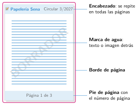

Encabezado, pie, borde de página y marca de agua
Criterios: 4a, 4b, 4d
🤔 Pienso10 min
Qué hago aquí: Piensa un momento y contesta con lo que ya sabes. No pasa nada si no lo sabes: es para empezar.
Mira un documento oficial de varias páginas (una carta del banco, un contrato). ¿Qué información aparece arriba y abajo en todas las páginas?
📖 Leo y aprendo30 min
Qué hago aquí: Lee despacio, mira los dibujos y los ejemplos, y quédate con la idea clave del final.
El encabezado y el pie de página se escriben una vez y se repiten en todas las páginas. Se insertan en Insertar › Encabezado o Pie de página, o con doble clic en el margen superior o inferior. Para volver al texto, doble clic en el cuerpo o Cerrar encabezado y pie de página.

En la pestaña Encabezado y pie de página están el número de página (mejor «Página X de Y»), la fecha, el logotipo y la opción Primera página diferente, para que la portada no lleve encabezado.
El borde de página (Diseño › Bordes de página) enmarca toda la hoja; en Arte hay bordes con dibujos. La marca de agua (Diseño › Marca de agua) es un texto o una imagen muy clara detrás del texto: «BORRADOR», «CONFIDENCIAL» o el logo de la empresa.
✏️ Hago130 min
Qué hago aquí: Haz las actividades en orden. Empieza siempre por las básicas.
Escribe en qué lugar pondrías cada dato de un informe: a) el logotipo; b) «Página 2 de 5»; c) «CONFIDENCIAL» en grande y clarito; d) el nombre del informe.
En un documento de tres páginas, pon en el encabezado el nombre de tu empresa a la izquierda y la fecha a la derecha, y en el pie «Página X de Y» centrado. Haz que la primera página no lleve encabezado.
Pon una marca de agua de texto «BORRADOR» en diagonal y después cámbiala por una de imagen con el logo de tu empresa, decolorada.
Diseña una factura de tu empresa con borde de página personalizado con los colores corporativos, el logo en el encabezado y los datos de contacto en el pie.
¿Por qué crees que muchas empresas ponen «CONFIDENCIAL» como marca de agua? ¿Protege de verdad el documento?
🚀 Amplío (si quieres saber más)
Qué hago aquí: ¿Has terminado? Lee la curiosidad o elige el reto. Es voluntario.
Investiga cómo empezar la numeración en 3 (Número de página › Formato del número de página). ¿Cuándo sería útil?
✅ Compruebo10 min
Qué hago aquí: Contesta sin mirar la ficha y marca cómo lo llevas.